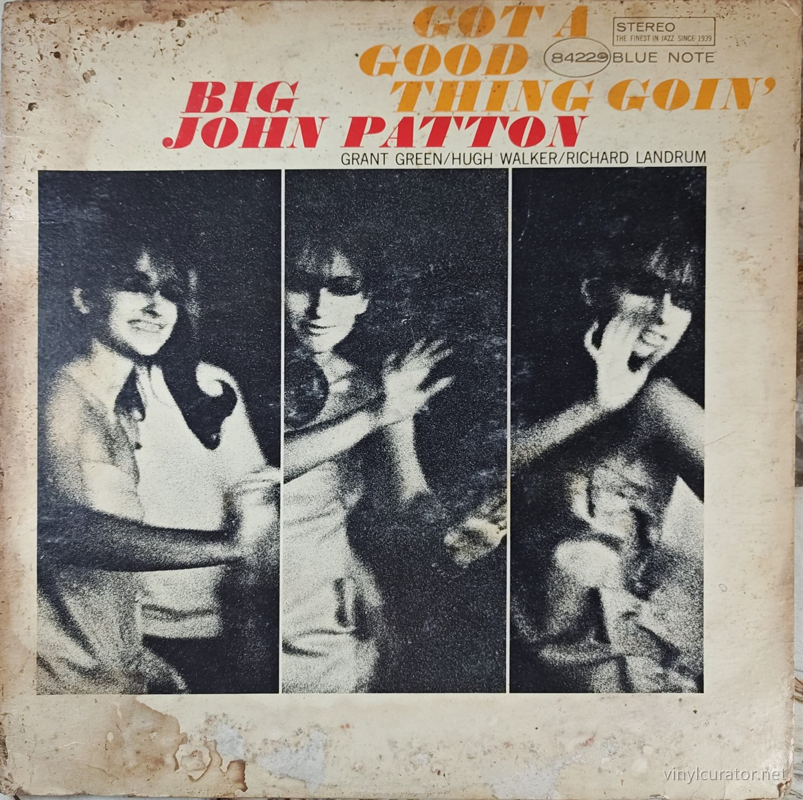
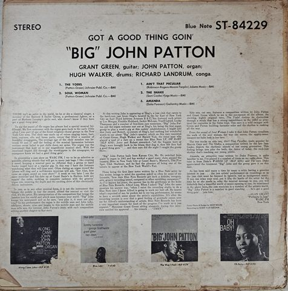
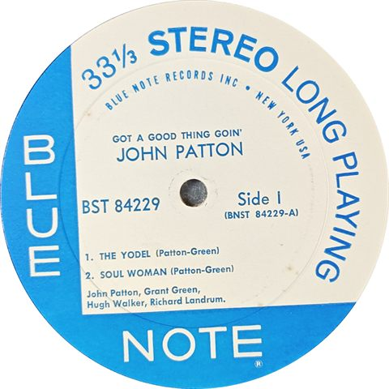
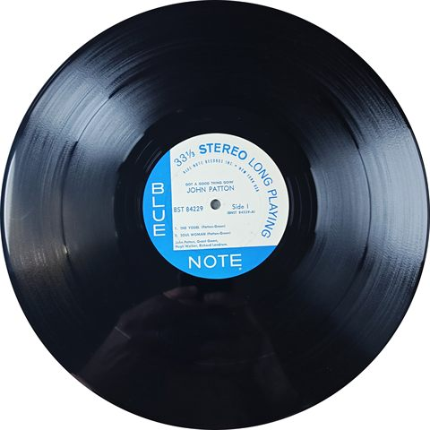
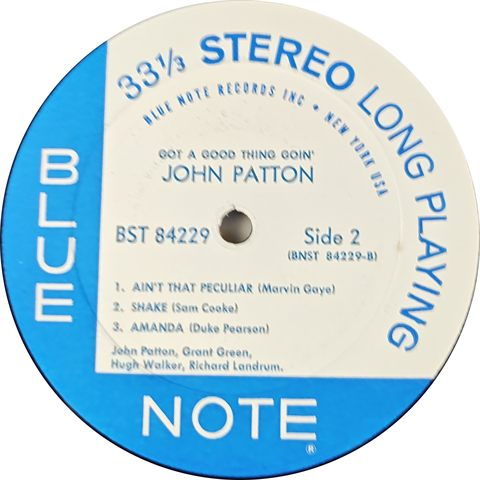
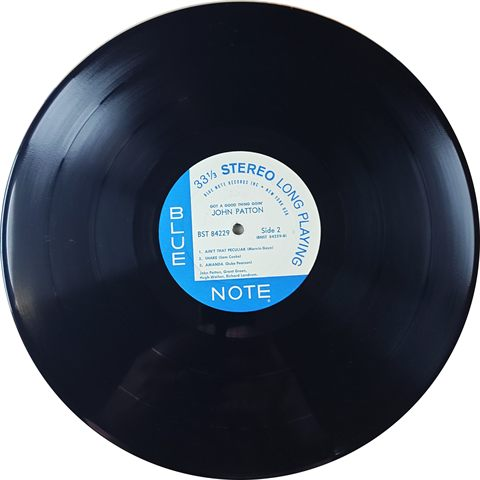
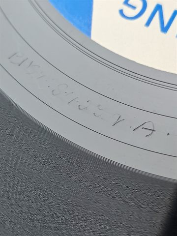
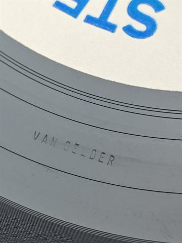
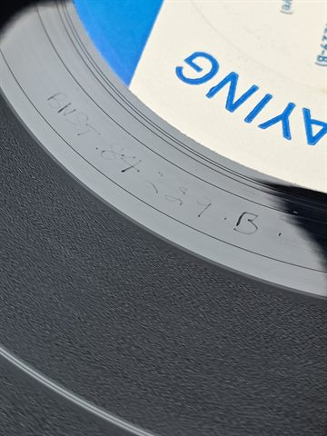
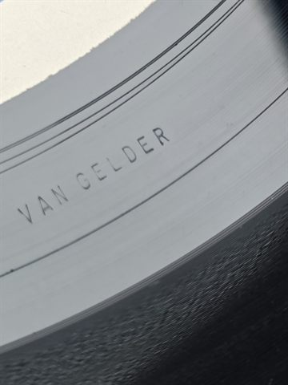

Thank you for buying this record. What follows is its documentation: the
pressing identified, the matrix / runout transcribed by hand from the dead
wax, and the condition as assessed before it was listed. It is yours to keep
with the record.
— Paul, Vinyl Curator
Big John Patton
Got a good thing going
1966 · Blue Note BST 84229 · Stereo · US · LP · 33 1/3 RPM










Pressing details
Label
Blue Note
Catalogue number
BST 84229
Year
1966
Mono / Stereo
Stereo
Country
US
Format
LP
Speed
33 1/3 RPM
Genre
Jazz - Soul Jazz/Organ Combo
Producer
Alfred Lion
Musicians
John Patton (organ), Grant Green (guitar), Hugh Walker (drums), Richard Landrum (conga)
Matrix / Runout
Side A: BNST-84229.A VAN GELDER
Side B: BNST 84229.B VAN GELDER
Condition
Cover
P WATER DAMAGE/P WATER DAMAGE
Vinyl
VG+
Variant chronology
1966 - Blue Note Records Inc, New York, USA label (no Liberty text), Van Gelder stamp, Plastylite-era pressing <- this copy
1966-1970 - Blue Note, "A Division of Liberty Records, Inc." label
1970-1973 - Blue Note, "A Division of United Artists Records" label
1985 - Blue Note reissue series (Manhattan/EMI)
2000s - Blue Note CD reissue (7243 5 80731 2 6) - not vinyl
2020s - audiophile 180g reissue (Blue Note Classic/Tone Poet-adjacent series)
This Pressing
1966 stereo first pressing - Blue Note NY USA label (BST 84229), Van Gelder-stamped runout, catalog number falls inside the NY USA design window that closed later that year.
The Album
Recorded on April 29, 1966 at Rudy Van Gelder's Englewood Cliffs studio, Got a Good Thing Goin' captures organist Big John Patton at the height of his mid-1960s soul-jazz run for Blue Note, working once again with guitarist Grant Green, a partnership that had defined Patton's sound across his prior Blue Note dates. Notably, this would be the last Patton album on which Green appears, closing out a fruitful chapter of the organist's discography. The program mixes two extended Patton-Green originals with three contemporary R&B covers - Marvin Gaye's "Ain't That Peculiar," Sam Cooke's "The Shake," and Duke Pearson's "Amanda" - reflecting the label's mid-60s push toward a groovier, radio-adjacent soul-jazz sound aimed at jukebox and juke-joint audiences as much as jazz clubs. Patton, a Kansas City-raised organist who came up playing R&B before joining Lou Donaldson's band and eventually leading his own Blue Note sessions, was among the most consistently funky and rhythmically direct organists of the Blue Note stable, and this date is often cited as a high point of his catalog for its unpretentious, groove-forward feel. Backed by drummer Hugh Walker and conguero Richard Landrum, the record leans into a percussive, dance-oriented soul-jazz idiom that helped define the genre's mid-60s sound alongside contemporaries like Grant Green's own leader dates and Lou Donaldson's soul-jazz records. Critically, the album has been well regarded in retrospect, with later assessments praising its unfussy, hot up-tempo grooves as some of the best soul-jazz to come out of the Blue Note organ combo tradition, even as some listeners find the material formally simple compared to Patton's more exploratory work. The album stands as a snapshot of a transitional moment for Blue Note itself, made just as the label's ownership was about to change hands, and remains a favorite among collectors of 1960s organ-combo soul jazz.
Tracklist
Side 1
1. The Yodel (Patton-Green)
2. Soul Woman (Patton-Green)
Side 2
1. Ain't That Peculiar (Robinson-Moore-Tarplin-White)
2. The Shake (Sam Cooke)
3. Amanda (Duke Pearson)
The Label
This copy carries the light-blue and white "BLUE NOTE RECORDS INC · NEW YORK, USA" label with no reference to Liberty Records, the fifth Blue Note label design used roughly 1962-1966 on catalog numbers running continuously from BLP/BST 4081 up to about 4247/84247. Blue Note was sold to Liberty Records in mid-1966, after which surviving stock of this NY USA label was used briefly before the label text was updated to read "A Division of Liberty Records, Inc." Because BST 84229 falls squarely inside the NY USA catalog window and this copy still bears that unmodified address text, it sits at the very end of the label's independent-era design and is generally treated by collectors as the first-issue label for this specific title, pre-dating the Liberty-credited pressings that would soon follow. The transcribed runout (BNST 84229 A/B, Van Gelder stamp, matrix 114) is consistent with the original Van Gelder-cut lacquers used for this NY USA pressing; no Plastylite "ear" stamp was noted in the collector's transcription, which is not unusual since sellers often omit it, but its absence here cannot be confirmed either way from the data given.
Fidelity
Engineered by Rudy Van Gelder direct to the original stereo masters, this NY USA pressing sits at or near the top of the fidelity hierarchy for this title, predating the thinner-sounding Liberty and United Artists-era pressings that followed from roughly 1967-1973. Collectors on forums such as Steve Hoffman generally favor these mid-60s Van Gelder-cut Blue Note stereo pressings for their warmth and immediacy compared to later reissues. No audiophile remaster (Music Matters, Analogue Productions, Tone Poet, etc.) of this specific title is documented as of this writing, so this original pressing represents the best commonly available sonic option; a later 2000s CD reissue exists but is a digital, not vinyl, alternative.
Notes
1966 Blue Note BST 84229 stereo - original first pressing. Label reads "Blue Note Records Inc, New York, USA" with no Liberty Records text, placing it before the mid-1966 ownership-change relabeling; runout shows the expected BNST 84229 A/B etchings with a Van Gelder stamp and matrix number 114, consistent with the original lacquers cut for this release. No Plastylite ear was noted in the collector's transcription, which is common in casual transcriptions and does not by itself rule out a first-pressing plant. Cover is a Reid Miles design typical of the period; back cover ad art for contemporaneous Patton titles (Along Came John, Blue John, The Way I Feel, Oh Baby!) further supports a mid-1966 release window.
Documenting collections
I do this work for other people’s collections too — documenting a
collection record by record, researching individual pressings, and preparing
collections for sale or for insurance. If you have a collection you would like
documented, or a record you want identified properly, get in touch:
email
This record’s page: https://vinylcurator.net/albums/big-john-patton-got-a-good-thing-going/